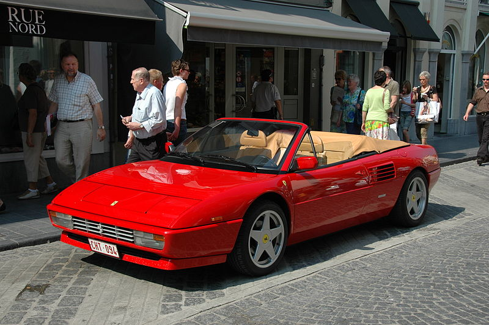
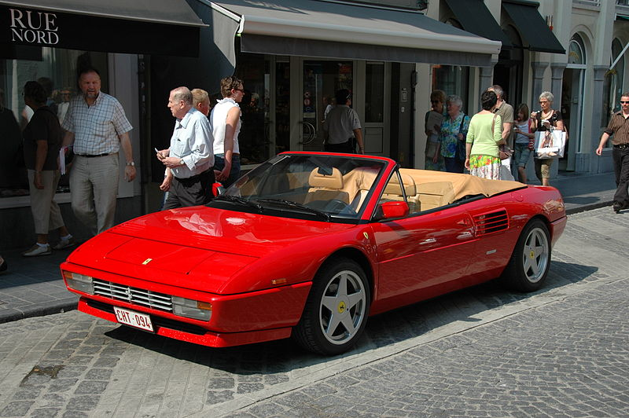

Ferrari 328 GTB і GTS - наступник Ferrari 308 GTB і GTS, в значній мірі оновлена 308 GTB і GTS відповідно, невеликі зміни були внесені в стилі кузові та двигуні, у тому числі збільшився об'ємом двигуна до 3,2 л (3185 куб.см). 7400 шт. Ferrari 328s були випущені на той час модель була замінена на нову 348 в 1989 році, в результаті чого всього за 308/328 покоління майже 20000. Ferrari 328 GTB і GTS на думку деяких любителів Ferrari є одним із самих надійних Феррарі, на відміну від деяких моделей, більшість двигунів обслуговування може бути виконана без зняття двигуна з автомобіля. Загальні характеристики[ред. • ред. код] Ferrari 328 використовує 3,2-літровий двигун V8 з 4 клапанами на циліндр потужністю 270 к.с. (201 кВт) і 313 Н · м крутного моменту. Його максимальна швидкість становить 267 км / ч і досягає 97 км / ч за 5,5 секунди і 160 км / ч за 13,0 секунди. Шасі має передні та задні незалежні підвіски, подвійні поперечні важелі з пружинами, телескопічними амортизаторами, а також стабілізатори поперечної стійкості. Рульове управління рейкового типу, 5-ступінчасту механічну коробку передач.
Розгін -
Для 328 GTB
0-100 км / год 5,5 секунди ок.
Максимальна швидкість 267 км / ч
Для 328 GTS
0-100 км / год за 5,9 секунди
Максимальна швидкість 62 км / ч
На головну